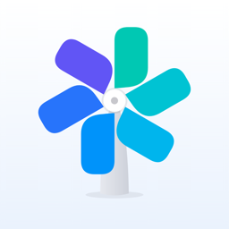

개인정보 처리방침
풍차돌리기
시행일: 2026년 10월 1일
풍차돌리기(이하 "앱")는 이용자의 개인정보를 수집하지 않습니다.
1. 수집하는 정보
앱은 이름, 연락처, 계좌번호 등 개인을 알아볼 수 있는 정보를 수집하지 않으며, 회원가입 절차가 없습니다.
2. 기기에 저장되는 정보
이용자가 입력한 예·적금 정보(은행 이름, 금액, 금리, 가입일·만기일, 메모)와 앱 설정은 이용자의 기기 안에만 저장됩니다. 이 정보는 개발자를 포함한 누구에게도 전송되지 않습니다. 앱을 삭제하거나 설정의 '초기화'를 누르면 모두 지워집니다.
3. 외부 서비스
금리 비교 화면은 금융감독원 '금융상품한눈에' 오픈 API에서 예·적금 공시 정보를 받아 옵니다. 이때 이용자의 개인정보는 전송되지 않습니다.
4. 알림
만기·납입일·가입 알림은 기기 안에서 예약되는 로컬 알림이며, 알림 내용은 외부로 전송되지 않습니다.
5. 백업
이용자가 '백업 파일 내보내기'를 선택하면 기기에 저장된 정보가 파일로 만들어지고, 이용자가 고른 곳(파일 앱, 메신저 등)에 저장됩니다. 파일의 보관과 공유는 이용자가 직접 관리합니다.
6. 문의
개인정보 관련 문의는 문의 게시판에 남겨 주세요.